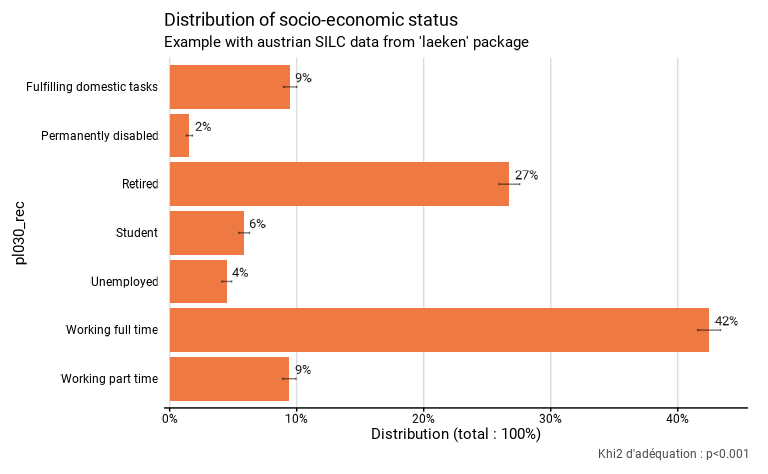

Overview of functionr functions
fonctionr_functions.RmdIntroduction : l’objectif général du package et des différentes fonctions
L’objectif de fonctionr est de faciliter grandement
l’analyse des données issues de sondages complexes, en particulier pour
la description de variables et le croisement bivariés.
Plusieurs package permettent traiter des données issues de sondages
complexes, c’est en particulier le cas de survey qui permet
de réaliser des analyses de estimations sur base de ce type de données
et de srvyr qui permet d’appliquer les verbes de
dplyr à des sondages complexes, mais aucun de ces deux
packages ne permet de réaliser des graphiques prêts à la publications,
et ils ne permettent pas de réaliser dans une seule fonction à la fois
des estimations d’indicateurs et des tests statistiques.
fonctionr se base sur ces deux packages et sur
ggplot2 pour faciliter grandement le travail du chercheur
en produisant directement en une seule fonction (pour chaque type de
variable ou de croisement entre variable) : un tableau de résultat avec
les indicateurs, les effectifs et leurs intervalles de confiance ; un
graphique prêt à être publié et le plus souvent un test statistique le
plus approprié au croisement étudié. Il est aussi possible de
directement exporter ces trois résultats dans un fichier xlsx.
La suite de ce manuel se déroule de la manière suivante. Dans un premier temps on décrira les différentes fonctions, ce qu’elles produisent et dans quels cas elles peuvent être utilisées. Dans un deuxième temps, on présente un tableau récapitulatif des arguments. De nombreux arguments revenant dans plusieurs fonctions, il est plus facile de présenter la structure globale de ceux-ci que de se répéter dans chaque fonction. Les arguments peuvent aussi être classés en différents type, ce qui permet d’aborder successivement certaines. Ainsi, nous aborderons successivement :
la question du type de base de données utilisées;
les arguments obligatoires qui reprennent, par exemple les variables décrites;
Les arguments facultatifs mais qui ont une influence sur les calculs, par exemple la possibilité d’introduire des facettes ou de filtrer les données
Les arguments esthétiques qui influencent uniquement le graphique, par exemple les polices, les couleurs ou les légendes à insérer dans le graphique.
L’objectif des différentes fonctions
La plupart des fonctions permettent, à partir de données issues d’un sondage complexe ou simple, de produire une liste comprenant un graphique, un tableau de d’indicateurs et les résultat d’un texte statistique.
Le graphique “graph” permet une visualisation des indicateurs avec des intervalle de confiance. Il s’agit d’un objet de ggplot2 qui peut donc aussi être modifié par la suite. Le graphique se veut suffisamment finalisée pour être directement utilisable dans une publication.
Le tableau “tab” reprend les chiffres sur base desquels le graphique est construit. Les différentes colonnes reprennent généralement le nom de l’indicateur, de la modalité et des éventuelles facettes, les valeurs des indicateurs, leurs bornes d’intervalle de confiance, le nombre de personnes dans l’échantillon dans chaque catégorie, l’estimation du nombre de personnes dans la population dans chaque catégorie et les bornes de l’intervalle de confiance de cette estimation.
Le résultat d’un test statistique quand il y en a un qui est pertinent.
La plupart des fonction permettent aussi d’exporter directement ces trois résultats dans un format excell.
Dans la suite de cette partie, nous pass fonctions en indiquant quels sont les objectifs de chaque fonction et leurs spécificité.
distrib_discrete() et distrib_d()
distrib_discrete(), avec distrib_d() comme
alias, calcule la distribution de la fréquence des différentes modalités
d’une variables qualitative.
Dans l’exemple ci-dessous1, la fonction distrib_d()
décrit la distribution des différents statuts socio-économiques
(variable pl030_rec) dans le dataframe eusilc, avec une le poids
rb050.
Le tableau “tab” reprend les chiffres sur base desquels le graphique est construit. Il comprend les colonnes suivantes : le nom de la modalité (pl030_rec), l’estimation de la proportion de la population appartenant à la modalité (prop), les bornes inférieure (prop_low) et supérieure (prop_upp) de l’intervalle de confiance de cette estimation à un niveau de confiance de 95%, le nombre de personnes dans l’échantillon appartenant à la modalité (n_sample), l’estimation du nombre de personnes dans la population appartenant à la modalité (n_weighted), et les bornes inférieure (n_weighted_low) et supérieure (n_weighted_upp) de l’intervalle de confiance de cette estimation à un niveau de confiance de 95%.
Le résultat du test statistique “test.stat”. Il s’ait du khi2 d’adéquation. Ce test est réalisé avec comme hypothèse nulle, la répartition de la population selon le vecteur mentionné dans l’argument probs, c’est-à-dire, ici, 20% de travailleurs à temps plein, 15% de travailleurs à temps partiel, 10% de chômeurs, 10% d’étudiants, 25% de pensionnés, 10% de personnes en incapacité permanente de travail et 10% de personnes au foyer. Si aucun vecteur n’était mentionné dans probs, aucun test n’aurait été effectué. Si le vecteur n’avait pas une somme de 1, il aurait été ajusté pour avoir une telle somme. Notons aussi que la p valeur du test est aussi mentionnée sur le graphique.
# Loading of data
data(eusilc, package = "laeken")
# Recoding eusilc$pl030 into eusilc$pl030_rec
eusilc$pl030_rec <- NA
eusilc$pl030_rec[eusilc$pl030 == "1"] <- "Working full time"
eusilc$pl030_rec[eusilc$pl030 == "2"] <- "Working part time"
eusilc$pl030_rec[eusilc$pl030 == "3"] <- "Unemployed"
eusilc$pl030_rec[eusilc$pl030 == "4"] <- "Student"
eusilc$pl030_rec[eusilc$pl030 == "5"] <- "Retired"
eusilc$pl030_rec[eusilc$pl030 == "6"] <- "Permanently disabled"
eusilc$pl030_rec[eusilc$pl030 == "7"] <- "Fulfilling domestic tasks"
# Computation, taking sample design into account
library(fonctionr)
eusilc_dist_d <- distrib_d(
data = eusilc,
weights = rb050,
quali_var = pl030_rec,
probs = c(.2,.15,.1,.1,.25,.1,.1),
title = "Distribution of socio-economic status",
subtitle = "Example with austrian SILC data from 'laeken' package"
)
#> Input: data.frame
#> Sampling design -> ids: `1`, weights: rb050
eusilc_dist_d$graph
eusilc_dist_d$tab
#> # A tibble: 7 × 8
#> pl030_rec prop prop_low prop_upp n_sample n_weighted n_weighted_low
#> <fct> <dbl> <dbl> <dbl> <int> <dbl> <dbl>
#> 1 Fulfilling domest… 0.0948 0.0897 0.100 1207 640311. 605407.
#> 2 Permanently disab… 0.0155 0.0133 0.0180 178 104930. 89217.
#> 3 Retired 0.267 0.259 0.276 3146 1806954. 1750021.
#> 4 Student 0.0586 0.0545 0.0629 736 395829. 367611.
#> 5 Unemployed 0.0449 0.0411 0.0489 518 303252. 277166.
#> 6 Working full time 0.425 0.416 0.434 5162 2869868. 2805298.
#> 7 Working part time 0.0941 0.0890 0.0995 1160 636121. 600495.
#> # ℹ 1 more variable: n_weighted_upp <dbl>
eusilc_dist_d$test.stat
#>
#> Design-based chi-squared test for given probabilities
#>
#> data: ~pl030_rec
#> X-squared = 11462652, scale = 1300.5577, df = 2.9068, p-value < 2.2e-16
distrib_group_discrete() et
distrib_group_d()
distrib_group_discrete(), avec
distrib_group_d() comme alias, calcule la distribution de
la fréquence des différentes modalités d’une variables qualitative selon
une autre variable qualitative, que l’on peut considérer comme des
groupes. Par rapport aux autres fonctions, faute de représentation
adéquate, les intervalles de confiance ne sont pas indiqués sur le
graphique. Le test statistique repris est celui du khi2 de Pearson avec
l’ajustement de Rao & Scott. Ce test est réalisé avec comme
hypothèse nulle, le fait que les deux variables qualitatives (d’intérêt
et de groupe) soient statistiquement indépendantes.
L’exemple ci-dessous montre la distribution des fréquences des différents statuts socio-économiques (pl030_rec) selon la nationalité (pb220a).
eusilc_dist_group_d <- distrib_group_d(eusilc,
weights = rb050,
group = pb220a,
quali_var = pl030_rec,
title = "Distribution of socio-economic status according to nationality",
subtitle = "Example with austrian SILC data from 'laeken' package"
)
#> Input: data.frame
#> Sampling design -> ids: `1`, weights: rb050
eusilc_dist_group_d$graph
#> Warning: Removed 1 rows containing missing values (`geom_text()`).
eusilc_dist_group_d$tab
#> # A tibble: 21 × 9
#> # Groups: pb220a [3]
#> pb220a pl030_rec prop prop_low prop_upp n_sample n_weighted n_weighted_low
#> <fct> <fct> <dbl> <dbl> <dbl> <int> <dbl> <dbl>
#> 1 AT Fulfillin… 0.0890 0.0838 0.0944 1036 548489. 516023.
#> 2 AT Permanent… 0.0119 0.00986 0.0142 125 73270. 60135.
#> 3 AT Retired 0.285 0.276 0.293 3055 1754654. 1698342.
#> 4 AT Student 0.0602 0.0559 0.0648 693 371222. 343916.
#> 5 AT Unemployed 0.0388 0.0351 0.0427 411 238841. 215672.
#> 6 AT Working f… 0.421 0.412 0.431 4689 2595137. 2532480.
#> 7 AT Working p… 0.0942 0.0888 0.0998 1064 580514. 546451.
#> 8 EU Fulfillin… 0.124 0.0887 0.166 38 20343. 13851.
#> 9 EU Permanent… 0.0498 0.0280 0.0811 15 8186. 4019.
#> 10 EU Retired 0.155 0.115 0.202 45 25429. 17928.
#> # ℹ 11 more rows
#> # ℹ 1 more variable: n_weighted_upp <dbl>
eusilc_dist_group_d$test.stat
#>
#> Pearson's X^2: Rao & Scott adjustment
#>
#> data: NextMethod()
#> F = 32.8, ndf = 11.957, ddf = 144750.034, p-value < 2.2e-16
prop_group()
prop_group() compare la distribution d’une variable
dichotomitique (c’est-à-dire une proportion) selon une variable
qualitative qu’on peut considérer comme des groupes.
Par rapport aux autres fonctions, le graphique et le tableau contiennent une modalité “Total” qui reprend l’estimation de la proportion pour l’ensemble de la population de référence. Dans le tableau, on retrouve tant l’estimation du nombre de personnes dans la population pour lesquelles le critère de proportion est vérifié (n_true_weighted) accompagné de ses bornes inférieure (n_true_weighted_low) et supérieure (n_true_weighted_upp) de l’intervalle de confiance à un niveau de confiance de 95% que l’estimation du nombre total de personnes dans la population pour lesquelles les données sont valides2 (n_tot_weighted) accompagné de ses bornes inférieure (n_tot_weighted_low) et supérieure (n_tot_weighted_upp) de l’intervalle de confiance.
Le test statistique repris est celui du khi2 de Pearson avec l’ajustement de Rao & Scott. Ce test est réalisé avec comme hypothèse nulle, le fait que les deux variables qualitatives (la varible dichotomique et de groupe) soient statistiquement indépendantes .
L’exemple ci-dessous compare la proportion d’individus qui bénéficient d’une allocation de chômage (py090n > 0) selon les différents statuts socio-économiques (pl030_rec).
eusilc_prop <- prop_group(eusilc,
group = pl030_rec,
prop_exp = py090n > 0,
weights = rb050,
title = "% of ind. receiving unemployment benefits in their hh by soc.-eco. stat.",
subtitle = "Example with austrian SILC data from 'laeken' package"
)
#> Input: data.frame
#> Sampling design -> ids: `1`, weights: rb050
#> Variable(s) détectée(s) dans l'expression : py090n
#> 0 lignes supprimées avec valeur(s) manquante(s) pour le(s) variable(s) de l'expression
eusilc_prop$graph
eusilc_prop$tab
#> # A tibble: 8 × 11
#> pl030_rec prop prop_low prop_upp n_sample n_true_weighted
#> <fct> <dbl> <dbl> <dbl> <int> <dbl>
#> 1 Fulfilling domestic tasks 0.0485 0.0369 0.0625 1207 31048.
#> 2 Permanently disabled 0.209 0.152 0.278 178 21975.
#> 3 Retired 0.0177 0.0134 0.0229 3146 31988.
#> 4 Student 0.0194 0.0106 0.0324 736 7666.
#> 5 Unemployed 0.732 0.691 0.770 518 221878.
#> 6 Working full time 0.0818 0.0743 0.0897 5162 234629.
#> 7 Working part time 0.110 0.0921 0.130 1160 69869.
#> 8 Total 0.0916 0.0864 0.0970 12107 619054.
#> # ℹ 5 more variables: n_true_weighted_low <dbl>, n_true_weighted_upp <dbl>,
#> # n_tot_weighted <dbl>, n_tot_weighted_low <dbl>, n_tot_weighted_upp <dbl>
eusilc_prop$test.stat
#>
#> Pearson's X^2: Rao & Scott adjustment
#>
#> data: NextMethod()
#> F = 485.82, ndf = 5.9943, ddf = 72567.0400, p-value < 2.2e-16
central_group(), mean_group() et
median_group()
central_group() compare la valeur centrale d’une
variable quantitative selon une variable qualitative qu’on peut
considérer comme des groupes. Deux valeurs centrales sont possibles : la
moyenne (quand l’argument type = “mean” ou pour l’alias
mean_group()) et la médiane (quand l’argument type =
“median” ou pour l’alias median_group()).
Pour mean_group(), le test statistique effectué est un
test de Wald3. Ce test est réalisé avec comme hypothèse
nulle, le fait que les coefficients d’une régression linéaire de la
variable qualitative (les groupes) sur la variable quantitative soient
nuls. Pour median_group(), le test statistique effectué est
celui de Kruskal Wallis.
L’exemple ci-dessous compare le revenu équivalent mensuel moyen (eqIncome / 12) selon les différents statuts socio-économiques (pl030_rec).
eusilc_mean <- mean_group(eusilc,
group = pl030_rec,
quanti_exp = eqIncome,
weights = rb050,
title = "Mean of annual equivalised income in household by socio-economic status",
subtitle = "Example with austrian SILC data from 'laeken' package")
#> Input: data.frame
#> Sampling design -> ids: `1`, weights: rb050
#> Variable(s) détectée(s) dans quanti_exp : eqIncome
#> 0 lignes supprimées avec valeur(s) manquante(s) pour le(s) variable(s) de quanti_exp
eusilc_mean$graph
eusilc_mean$tab
#> # A tibble: 8 × 8
#> pl030_rec mean mean_low mean_upp n_sample n_weighted n_weighted_low
#> <fct> <dbl> <dbl> <dbl> <int> <dbl> <dbl>
#> 1 Fulfilling domest… 15549. 15058. 16040. 1207 640311. 605407.
#> 2 Permanently disab… 15962. 14475. 17450. 178 104930. 89217.
#> 3 Retired 20635. 20254. 21016. 3146 1806954. 1750021.
#> 4 Student 16260. 15548. 16972. 736 395829. 367611.
#> 5 Unemployed 17474. 16579. 18369. 518 303252. 277166.
#> 6 Working full time 22741. 22442. 23040. 5162 2869868. 2805298.
#> 7 Working part time 19089. 18535. 19643. 1160 636121. 600495.
#> 8 Total 20431. 20238. 20625. 12107 6757264. 6702060.
#> # ℹ 1 more variable: n_weighted_upp <dbl>
eusilc_mean$test.stat
#> Wald test for pl030_rec
#> in svyglm(formula = fmla, design = data_W)
#> F = 137.4607 on 6 and 12100 df: p= < 2.22e-16
many_val(), many_prop(),
many_mean() et many_median()
many_val() calcule les proportions (quand l’argument
type = “prop” ou pour l’alias many_prop()), moyennes (quand
l’argument type = “mean” ou pour l’alias many_mean()) ou
médianes (quand l’argument type = “median” ou pour l’alias
many_median()) simultanément pour plusieurs variables
différentes. Dans le tableau, pour many_prop(), on
distingue l’estimation du nombre de personnes dans la population pour
lesquelles le critère de proportion est vérifié (n_true_weighted) de
l’estimation du nombre total de personnes dans la population pour
lesquelles les données sont valides (n_tot_weighted),comme pour
prop_group(). Pour des raisons évidentes, ces fonctions ne
calculent aucun test statistique.
L’exemple ci-dessous compare les revenus mensuels moyens de l’emploi salarié, d’une activité d’indépendant et d’une allocation de chômage dans la totalité de la population.
# Computation, taking sample design into account
eusilc_many_mean <- many_mean(eusilc,
list_vars = c(py010n, py050n, py090n),
list_vars_lab = c("salaires","revenus d'une activité indépendant","allocation de chômage"),
weights = rb050,
unit = "€",
title = "Income from wage, independant worker and unemployement benefits",
subtitle = "Example with austrian SILC data from 'laeken' package"
)
#> Variable(s) entrées : py010n, py050n, py090n
#> Input: data.frame
#> Sampling design -> ids: `1`, weights: rb050
eusilc_many_mean$graph
eusilc_many_mean$tab
#> # A tibble: 3 × 8
#> list_col mean mean_low mean_upp n_sample n_weighted n_weighted_low
#> <fct> <dbl> <dbl> <dbl> <int> <dbl> <dbl>
#> 1 salaires 9159. 8945. 9373. 12107 6757264. 6702061.
#> 2 revenus d'une acti… 1096. 1002. 1191. 12107 6757264. 6702061.
#> 3 allocation de chôm… 426. 393. 459. 12107 6757264. 6702061.
#> # ℹ 1 more variable: n_weighted_upp <dbl>
many_val_group(), many_prop_group(),
many_mean_group() et many_median_group()
many_val_group() compare des proportions (quand
l’argument type = “prop” ou pour l’alias
many_prop_group()), moyennes (quand l’argument type =
“mean” ou pour l’alias many_mean_group()) ou médianes
(quand l’argument type = “median” ou pour l’alias
many_median_group()) simultanément pour plusieurs variables
différentes et selon une variable qualitative qui peut être considérée
comme des groupes. Dans le tableau, pour many_prop_group(),
on distingue l’estimation du nombre de personnes dans la population pour
lesquelles le critère de proportion est vérifié (n_true_weighted) de
l’estimation du nombre total de personnes dans la population pour
lesquelles les données sont valides (n_tot_weighted),comme pour
prop_group() et many_prop(). Pour des raisons
évidentes, ces fonctions ne calculent également aucun test
statistique.
L’exemple ci-dessous compare les revenus mensuels moyens de l’emploi salarié, d’une activité d’indépendant et d’une allocation de chômage des femmes et des hommes.
# Computation, taking sample design into account
eusilc_many_mean_group <- many_mean_group(eusilc,
group = rb090,
list_vars = c(py010n, py050n, py090n),
list_vars_lab = c("salaires","revenus d'une activité indépendant","allocation de chômage"),
weights = rb050,
unit = "€",
title = "Income from wage, independant worker and unemployement benefits by sex",
subtitle = "Example with austrian SILC data from 'laeken' package"
)
#> Variable(s) entrées : py010n, py050n, py090n
#> Input: data.frame
#> Sampling design -> ids: `1`, weights: rb050
eusilc_many_mean_group$graph
eusilc_many_mean_group$tab
#> # A tibble: 6 × 9
#> rb090 list_col mean mean_low mean_upp n_sample n_weighted n_weighted_low
#> <fct> <fct> <dbl> <dbl> <dbl> <int> <dbl> <dbl>
#> 1 male salaires 12445. 12098. 12791. 5844 3237897. 3171916.
#> 2 female salaires 6136. 5900. 6372. 6263 3519368. 3451545.
#> 3 male revenus d'… 1539. 1368. 1711. 5844 3237897. 3171916.
#> 4 female revenus d'… 689. 600. 778. 6263 3519368. 3451545.
#> 5 male allocation… 420. 371. 468. 5844 3237897. 3171916.
#> 6 female allocation… 431. 386. 476. 6263 3519368. 3451545.
#> # ℹ 1 more variable: n_weighted_upp <dbl>
theme_fonctionr()
theme_fonctionr() est une fonction qui permet
d’appliquer le thème de fonctionr à un objet de
ggplot2. Cette fonction a un intérêt si l’on veut par
exemple, uniformiser l’esthétique de tous les graphiques pour une
publication.
esth_graph()
esth_graph() est une fonction qui permet aisément de
construire une graphique similaire à ceux produit par les autres
fonction mais directement à partir d’une tableau de résultats calculé
précédemment. Cette fonction a un intérêt si l’on veut appliquer
l’esthétique graphique de fonctionr mais à des indicateurs
qui ne sont pas calculés par une autre fonction de
fonctionr. Par rapport à theme_fonctionr(),
esth_graph() permet aisément d’intégrer plusieurs éléments
que l’on retrouve dans d’autres graphiques produits par
fonctionr : valeurs de l’indicateur, bornes d’intervalle de
confiance, nombres d’individus dans l’échantillon. La logique
d’esth_graph() est aussi différente de celle de
theme_fonctionr() : la première fonction produit un
graphique à partir d’une table, alors que la seconde applique un thème à
un graphique existant.
Le tableau récapitulait des arguments
Comme nous l’avons vu, la majorité des fonctions de
fonctionr se ressemblent. La plupart des arguments se
retrouvent dans plusieurs fonctions. Le tableau ci-dessous reprend la
totalité des argument en indiquant chaque fois pour quelle(s)
fonction(s) il est utilisé. L’ordre repris est celui des fonctions et
les couleurs regroupent les arguments selon leur “catégorie”. Cette
dernière a une visée pédagogique et regroupe ensemble des arguments dont
le rôle est similaire. Dans la suite, nous aborderons successivement les
arguments liés à la base de donnée utilisée, les arguments
indispensables qui doivent obligatoirement être mentionnés, les
arguments clés (c’est-à-dire pas obligatoire mais ayant une influence
sur les résultats) et les arguments esthétiques - qui influencent le
graphique et que l’on peut diviser en cinq sous-catégories : les
arguments esthétiques de base (qui ont une influence centrale sur le
graphique), les arguments esthétiques graphiques (barres et couleurs),
les arguments esthétiques de chiffres (unités, décimales, etc.), les
arguments esthétiques de lettres (police, etc.), les arguments de
labels. Un dernier argument, traitant de l’export de l’objet créé par
les fonctions de fonctionr sera aussi abordé.
TABLEAU
Les arguments liés à la base de données utilisée
data est l’argument le plus important car il indique la base de
donnée à utiliser. Comme l’objectif du package est de permettre une
analyse des sondages complexe, il peut s’agir d’un objet
survey ou d’un objet srvyr, qui contiennent
les différentes informations sur le plan de sondage (poids, strates,
PSU…). Il est aussi possible que l’objet survey ou
srvyr soit un objet avec avec des replicate
weights pour utiliser les méthodes de rééchantillonnage pour
estimer la variance d’échantillonnage.
Il est également possible que data soit un dataframe. Dans ce cas,
les fonctions font l’hypothèse d’un sondage aléatoire simple. Ainsi,
fonctionr peut être utilisé pour l’analyse des sondages
complexe mais aussi des sondages aléatoires simple.
fonctionr peut aussi créer un objet de sondage complexe à
partit d’un dataframe. Dans ce cas, le dataframe doit être indiqué dans
data et les autres arguments (poids, strates, etc.) doivent être
indiquées dans l’argument … qui se trouve plus loin. L’argument … ne se
trouve pas directement après l’argument data pour permettre d’indiquer
plusieurs arguments (group, prop_exp, facet…) sans devoir mentionner
explicitement le nom de l’argument (par exemple ne pas devoir écrire
systématiquement group = db040). Cette manière de procéder fonctionne
pour les sondages complexes classiques mais pas pour les sondages
complexes intégrant des replicate weights. Si l’ont veut
intégrer des replicates weights, il est nécessaire de créer
d’abord un objet survey ou srvyr et d’utiliser
cet objet dans fonctionr.
Pour la fonction esth_graph(), il n’y a pas d’argument
data, mais un argument tab qui doit correspondre à la table avec les
indicateurs. Il s’appelle tab car il est similaire à l’objet tab produit
par la plupart des fonctions de fonctionr.
Les exemples ci-dessous montre trois manière différentes de prendre
en compte un même plan de sondage : en l’indiquant directement dans la
fonction de fonctionr, en créant d’abord un objet
survey et en créant d’abord un objet
srvyr.
### Un exemple où on indique directement dans la fonction de fonctionr les différents éléments du plan de sondage
eusilc_prop_1 <- prop_group(eusilc,
group = pl030_rec,
prop_exp = py090n > 0,
strata = db040,
ids = db030,
weights = rb050,
title = "% of ind. receiving unemployment benefits in their hh by soc.-eco. stat.",
subtitle = "Example with austrian SILC data from 'laeken' package"
)
#> Input: data.frame
#> Sampling design -> ids: db030, strata: db040, weights: rb050
#> Variable(s) détectée(s) dans l'expression : py090n
#> 0 lignes supprimées avec valeur(s) manquante(s) pour le(s) variable(s) de l'expression
eusilc_prop_1$graph
### Un exemple où utilise un objet survey
library(survey)
#> Loading required package: grid
#> Loading required package: Matrix
#> Loading required package: survival
#>
#> Attaching package: 'survey'
#> The following object is masked from 'package:graphics':
#>
#> dotchart
eusilc_survey<-svydesign(id = ~db030,strat=~db040, weight= ~rb050, data = eusilc)
eusilc_prop_2 <- prop_group(eusilc_survey,
group = pl030_rec,
prop_exp = py090n > 0,
title = "% of ind. receiving unemployment benefits in their hh by soc.-eco. stat.",
subtitle = "Example with austrian SILC data from 'laeken' package"
)
#> Input: objet survey
#> Sampling design -> : , :
#> Variable(s) détectée(s) dans l'expression : py090n
#> 0 lignes supprimées avec valeur(s) manquante(s) pour le(s) variable(s) de l'expression
eusilc_prop_2$graph
### Un exemple où utilise un objet srvyr
library(srvyr)
#>
#> Attaching package: 'srvyr'
#> The following object is masked from 'package:stats':
#>
#> filter
eusilc_srvyr<-as_survey_design(eusilc,
ids = db030,
strata = db040,
weights = rb050)
eusilc_prop_3 <- prop_group(eusilc_srvyr,
group = pl030_rec,
prop_exp = py090n > 0,
title = "% of ind. receiving unemployment benefits in their hh by soc.-eco. stat.",
subtitle = "Example with austrian SILC data from 'laeken' package"
)
#> Input: objet srvyr
#> Sampling design -> ids: db030, strata: db040, weights: rb050
#> Variable(s) détectée(s) dans l'expression : py090n
#> 0 lignes supprimées avec valeur(s) manquante(s) pour le(s) variable(s) de l'expression
eusilc_prop_3$graph
Les arguments indispensables
Les arguments indispensable sont des arguments qui sont nécessaire au bon fonctionnement de la fonction et qui ne peuvent prendre aucune valeur par défaut.
Ces arguments sont principalement de différents types : variables qualitatives, expressions ou listes de variables.
group et quali_var sont des variables qualitatives. Les variables indiquées pour ces arguments sont ainsi transformées en facteurs pour leur usage dans la fonction.
prop_exp et quanti_exp sont des expressions. C’est-à-dire que ces arguments peuvent être des variables (un variable binaire 0-1 pour prop_exp et une variable numérique pour quanti_exp) ou une expression qui produit une variable (binaire pour prop_exp et quantitative pour quanti_exp). Ainsi, il n’est pas nécessaire de préparer à l’avance la variable binaire ou la quantitative, elle peut être calculée directement dans les fonctions
prop_group()etcentral_group(). Précisons que seuls les variables de la base de données et les valeurs numérique sont autorisées dans les expressions, les objets extérieurs à la table (par exemple un seuil contenu dans un objet) ne sont pas reconnu par ces fonctions. Dansfonctionr, tous les arguments qui terminent par _exp sont des expressions.list_vars doit être un vecteur reprenant l’ensemble des variables reprises dans les fonctions
many_val()etmany_val_group(). Pourmany_prop()etmany_prop_group(), les variables doivent être binaires (il aurait été trop compliqué d’introduire ici des expressions) et pourmany_mean(),many_mean_group(),many_median()etmany_median_group(), les variables doivent être numériques.
Juste après list_vars, il y a un argument esthétique de label des noms des variables. Cet argument doit être un vecteur reprenant les noms des variables telles que l’on souhaite qu’elles apparaissent dans le tableau (tab) et le graphique (graph) produits par la fonction. Bien qu’il ne s’agisse pas d’un argument indispensable, nous avons décidé de le placer juste après list_vars pour faciliter l’utilisation.
L’argument type est utilisé pour les fonctions “alias”
mean_group() et median_group() ;
many_prop(), many_mean() et
many_median() ; many_prop_group(),
many_mean_group() et many_median_group() à
partir des fonctions respectives central_group(),
many_val() et many_val_group(). Il ne doit pas
être utilisé par l’utilisateur s’il utilise les fonctions “alias”.
Pour esth_graph(), les arguments var et value sont
obligatoires et ils indiquent respectivement les colonnes dans tab avec
nom de l’indicateur et sa valeur.
Dans l’exemple ci-dessous, on calcule directement le revenu équivalent mensuel à partir de la variable de revenu annuel qu’on divise par 12.
eusilc_mean <- mean_group(eusilc,
group = pl030_rec,
quanti_exp = eqIncome / 12,
weights = rb050,
unit= "€",
title = "Mean of monthly equivalised income in household by socio-economic status",
subtitle = "Example with austrian SILC data from 'laeken' package")
#> Input: data.frame
#> Sampling design -> ids: `1`, weights: rb050
#> Variable(s) détectée(s) dans quanti_exp : eqIncome
#> 0 lignes supprimées avec valeur(s) manquante(s) pour le(s) variable(s) de quanti_exp
eusilc_mean$graph
eusilc_mean$tab
#> # A tibble: 8 × 8
#> pl030_rec mean mean_low mean_upp n_sample n_weighted n_weighted_low
#> <fct> <dbl> <dbl> <dbl> <int> <dbl> <dbl>
#> 1 Fulfilling domesti… 1296. 1255. 1337. 1207 640311. 605407.
#> 2 Permanently disabl… 1330. 1206. 1454. 178 104930. 89217.
#> 3 Retired 1720. 1688. 1751. 3146 1806954. 1750021.
#> 4 Student 1355. 1296. 1414. 736 395829. 367611.
#> 5 Unemployed 1456. 1382. 1531. 518 303252. 277166.
#> 6 Working full time 1895. 1870. 1920. 5162 2869868. 2805298.
#> 7 Working part time 1591. 1545. 1637. 1160 636121. 600495.
#> 8 Total 1703. 1686. 1719. 12107 6757264. 6702060.
#> # ℹ 1 more variable: n_weighted_upp <dbl>
eusilc_mean$test.stat
#> Wald test for pl030_rec
#> in svyglm(formula = fmla, design = data_W)
#> F = 137.4607 on 6 and 12100 df: p= < 2.22e-16Les arguments clés : pas obligatoires mais influençant les résultats
Les arguments clés sont des arguments qui ne sont pas indispensable mais qui influencent les résultats. Ils ont une valeur par défaut, souvent NULL. On y retrouve plusieurs types d’arguments.
facet est une variable qualitative qui produit des facets dans la table et le graphique. Comme group et quali_var, la variable indiquée pour cet argument est transformée en facteur pour leur usage dans la fonction. Par défaut, les facets ne sont pas produites.
filter_exp est une expression qui permet de filtrer les données de manière à produire la table, le graphique et le test, le cas échéant, sur une partie de l’échantillon. Comme il s’agit d’une expression, il est possible de mettre en oeuvre des conditions de filtres complexe et multiples, par exemple sélectionner uniquement les personnes âgées de moins de 60 ans, dont le revenu mensuel est inférieur à 3000€ et qui sont célibataires. Comme recommandé (REF), le filtrage des données est réalisé après la production de l’objet srvyr par la fonction. Ici aussi, seuls les variables de la base de données et les valeurs numérique sont autorisées dans les expressions, pas les objets extérieurs à la table. Par défaut, les données ne sont pas filtrées.
na.rm.group, na.rm.facet, na.rm.var indiquent la manière dont les éventuels NA dans les variables de groupe, de facet et dans quali_var sont traités. Si l’argument est TRUE, les NA seront retirés pour les calculs. Si l’argument est FALSE, une modalité spécifique est créée pour les NA. Dans ce cas, dans le graphique ils prennent toujours la couleur gris (grey) dans le graphique, pour pointer leur spécificité. Dans le cas où ils sont retirés, ils ne sont pas pris en compte pour estimer les indicateurs totaux, le cas échéant. Par défaut, l’argument prend la valeur FALSE, c’est-à-dire que les NA sont supprimés des analyses.
na.prop indique la manière dont les éventuels NA sont dans les variables introduites dans prop_exp sont traités. Si l’argument prend la valeur “rm”, tous les NA présent dans au moins une des variable faisant partie de prop_exp sont exclus avant de procéder aux calculs. De cette manière la proportion est calculée uniquement sur les observations “valides”. Dans ce cas, pour des raisons évidentes, il n’est pas possible d’introduire des conditions avec la valeur NA dans prop_exp (p. ex. on ne peut pas calculer la proportion de personnes dont le statut professionnel est NA). Si l’argument prend la valeur “include” les NA ne sont pas retirés avant de procéder aux calculs et la proportion est calculée sur l’ensemble des observations, NA compris. Cela peut être utile quand NA n’indique pas une valeur manquante mais une situation spécifique. Par exemple, dans une variable mesurant les points obtenu par des étudiants à un examen si le NA indique que l’étudiant était absent, on peut vouloir calculer la proportion d’étudiant ayant au moins 12/20 en conservant les absents au dénominateur, ce qui est possible avec na.prop = “include”. Par défaut na.prop prend la valeur “rm”. Précisons que pour central_group() et ses alias mean_group() et median_group(), il n’y a pas d’argument permettant de choisir le traitement des NA dans quanti_exp. Les observations comprenant au moins un NA dans une variable indiquée dans quanti_exp sont exclues des calculs, car il n’y a pas d’autres possibilité qui soit pertinente.
na.vars indique la manière dont les NA doivent être traités dans les différentes variables de many_val et many_val_group. Si l’argument prend la valeur “rm”, les NA sont exclus séparément dans chaque variable. Il en résulte que l’échantillon ne sera pas toujours le même pour chacune des variables calculée, mais que l’on conserve un maximum d’observations. Si l’argument prend la valeur “rm.all”, les observations qui comprennent au moins un NA dans une des variables de list_vars sont exclues. Cette manière de procéder exclut plus d’observation mais permet d’avoir un échantillon identique pour toutes les variables. Par défaut na.vars prend la valeur “rm”.
probs est un vecteur utilisé dans distrib_discrete() pour indiquer la distribution des proportions dans chaque modalité reprise dans l’hypothèse nulle sur base de laquelle le test du khi2 d’adéquation est calculé. Par défaut ce vecteur vaut NULL et le test du khi2 d’adéquation n’est pas calculé.
prop_method est un argument qui permet de choisir le type de correction pour l’estimation des intervalles de confiance d’une proportion, notamment pour éviter d’avoir des bornes inférieures à 0 ou supérieures à 1. Les valeurs peuvent prendre celles mentionnées dans l’argument method de la fonction svyciprop() du package survey. Par défaut, c’est la méthode “beta” qui est utilisées.
Les arguments esthétiques
Les arguments esthétiques sont des arguments qui affectent uniquement le graphique produit et pas la table, ni le test statistique. Pour des raisons pédagogique, nous aborderons successivement les arguments d’esthétique de base, d’esthétique graphique, d’esthétique des chiffres, d’esthétique des lettres et les labels.
L’esthétique de base
reorder est un argument qui en prenant la valeur TRUE permet de réordonner les barres selon leur valeur décroissante. Si reorder = FALSE, les barres ne sont pas réordonnées et c’est l’ordre des levels de la variable qui est utilisé pour ordonner les barre. La barre NA quand elle existe (par exemple avec na.rm.group = FALSE) et la barre Total ne sont jamais réordonnées et sont toujours positionnées dans le bas du graphique. en cas de facet les barres sont réordonnées sur base de chaque barre médiane. Par exemple, si l’on utilise des facet dans prop_group(), on regarder pour chaque groupe quelle est la barre médiane parmi les différentes et puis on va ordonner les groupes sur bases de ces médianes. Par défaut, reorder prend la valeur de FALSE. reorder n’est pas disponible dans distrib_group_discrete et many_val_group et ses alias (many_prop_group, many_mean_group et many_median_group) car pour ces variables, il y a plusieurs proportions ou indicateurs et il est difficile de choisir sur lequel ou laquelle réordonner. Dans ce cas, c’est l’ordre des levels des facteurs qui est utilisé.
position est un argument qui ne se trouve uniquement dans many_val_group et qui peut prendre les valeurs de “dodge” et de “stack”. Avec “dodge”, les barres de sont pas empilées. Avec “stack”, les barres sont empilées dans chaque groupe, ce qui peut avoir un intérêt quand les variables ont vocation à être additionnées, par exemple avec des revenus selon différentes sources qui peuvent former un revenu total. “dodge” est la valeur par défaut.
show_ci, show_n, show_value et show_lab sont des argument similaires qui peuvent prendre les valeurs TRUE et FALSE. Les valeur TRUE permettent de montrer les élements suivants : l’intervalle de confiance (show_ci), le nombre de personnes dans l’échantillon qui est à la base de l’estimation (show_value) et les titres et sous-titres du graphiques, des axes et de la légende (show). Les valeurs FALSE permettent de ne pas montrer sur le graphique ces différents éléments. Faute de représentaiton graphique adéquate show_ci n’est pas un argument de la fonction distrib_group_discrete(). Pour cette fonction, il est pas possible de représenter les intervalles de confiance sur le graphique, mais ils sont bien calculé dans la table (tab). C’est aussi le cas pour many_val_group et ses alias quand position = “stack”, les intervalles de confiance ne sont pas représentés sur le graphique. Précisons aussi que dans distrib_group_discrete(), pour des raisons de lisibilité, seuls les valeurs supérieurs à 2% sont indiquées sur le graphique. Par défaut, show_ci, show_value_ et show_lab ont la valeur de TRUE et show_n a la valeur de FALSE, de manière à montrer sur le graphique les intervalles de confiance, les valeurs des estimations et les noms des axes, mais pas le nombre d’individus dans l’échantillon. Nous aborderons en détail le contenu par défaut des labels des axes dans la partie abordant les labels.
total_name indique le nom qui doit être mentionné à côté de la barre du total dans le graphique. Par défaut, il s’agit de “Total”, mais l’utilisateur peut indiquer autre chose de plus spécifique.
Pour la fonction esth_graph(), les arguments sont un peu différents, à l’exception de reorder et show_value. error_low, error_upp et n_var permettent d’indiquer les colonnes dans tab où se trouvent les bornes inférieures et supérieures des barres d’erreurs et le nombre de personnes dans l’échantillon. Par défaut, ces arguments ont une valeur NULL, ce qui conduit à ne pas montrer ces éléments dans le graphique. name_total permet d’indiquer le nom du total dans tab de manière à ce que cette valeur soit mise en évidence (couleur et position) dans le graphique.
L’esthétique graphique
Les couleurs des barres peuvent être indiquées dans les arguments fill et pal. fill est utilisé pour les graphiques monochrome (prop_group(), central_group() et ses alias, distrib_discrete() et esth_graph()). Les couleurs de base de R ou un code couleur hexadécimal. pal est utilisé pour les graphiques avec plusieurs couleurs. pal doit reprendre le nom d’une palette des packages MetBrewer, MoMAColors ou PrettyCols. L’argument direction permet d’inverser le sens de la palette, en remplaçant le 1, par défaut, par -1 pour avoir le sens opposé. Pour many_val() et ses alias, pal peut prendre aussi une couleur unie (couleur de R ou code hexadécimal) si l’utilisateur souhaite un graphique monochrome. Les couleurs des NA et des totaux, quand ils sont présents sont toujours gris (grey) et gris foncé (grey40) et ne sont pas modifiable par les arguments fill ou pal. Par défaut, des couleurs ou des pallettes de couleurs différentes (EST-CE VRAI POUR TOUTES LES FONCTIONS MANY?) ont été choisies pour chaque fonctions différente, y compris les alias, pour éviter la confusion des graphiques.
dodge indique l’épaisseur des barres et peut aller de 0 (barre invisible car d’épaisseur nulle) à 1 (barre se touchant car ne laissant aucun espace entre elles). La valeur par défaut est de 0.9.
L’esthétique des chiffres
L’esthétique des chiffres concernent la manière dont l’estimation de l’indicateur est affichée sur le graphique. Ainsi, ces argument n’ont une utilité que si show_value = TRUE.
scale est un argument qui n’est utilisé que dans les graphique exprimant des proportion. Il indique le dénominateur par lequel il faut interpréter le chiffre. Par défaut, il a une valeur de 100 pour interpréter les chiffres mentionnés en pourcentage. Par exemple on peut donner une valeur de 1000 pour interpréter les chiffres en pour mille ou une valeur de 1 pour interpréter les chiffres comme de simple proportions.
digits indique le nombre de décimales qui doivent être affichées pour les valeurs sur le graphique. Par défaut, digit vaut 0, ce qui conduit à ne pas afficher de décimale.
unit indique l’unité à indiquer sur le graphique. Pour distrib_discrete(), prop_group, many_prop() et many_prop_group(), l’unité par défaut est “%”. Pour les autres l’argument par défaut prend une valeur vide, c’est-à-dire une absence d’unité indiquée sur le graphique. N’importe quel caractère ou chaine de caractère peut être utilisée : “€”, “m²”, etc.
dec indique le caractère qui doit être utilisé pour marqué la décimale dans les chiffes. Cet argument n’est utile que quand digits > 0. Par défaut, la virgule est utilisée comme c’est le cas dans le monde francophone.
L’esthétique des lettres
font indique la police qui est utilisée pour l’ensemble du texte dans le graphique. Actuellement trois polices sont directement incluses dans le package : Roboto, Montserrat and Gotham Narrow. Pour toutes les fonctions la police par défaut est Roboto.
wrap_width_y et wrap_width_leg indique le nombre de caractères avant d’aller à la ligne, pour respectivement les différent labels de l’axe des ordonnées et les différents labels de la légende légende. Ces valeurs sont par défaut de 25 caractères. wrap_width_leg n’est présent que pour les graphiques ayant une légende : distrib_group_discrete() et many_val_group et ses alias. Précisons aussi que le _y renvoie à l’axe des y tel qu’il est situé sur le graphique, après la transformation coord_flip() qui a lieu dans les fonctions. Ainsi, il s’agit souvent des groupes, de la variable qualitative pour distrib_discrete() ou de la liste des variables pour many_val et many_val_group et leurs alias.
legend_ncol indique le nombre maximum de colonnes dans la légende. Par défaut, il y a quatre colonnes maximum. Le nombre de lignes dans la légende s’ajuste au nombre maximum de colonnes. legend_ncol n’est aussi présent que pour les graphiques ayant une légende : distrib_group_discrete() et many_val_group et ses alias.
Les labels
Les arguments de label ne sont utilisés que si show_lab = TRUE. Si show_lab = FALSE, aucun des labels ci-dessous n’est indiqué.
title, subtitle, xlab, ylab, legend_lab et caption indiquent les textes à reprendre comme titre du graphique, sous-titre du graphique, titre de l’axe des abscisses, titre de l’axe des ordonnées, titre de la légende et de caption (la petite légende en bas à droite du graphique). Précisons que xlab et ylab font référence aux axes tels qu’ils sont situés sur le graphique, c’est-à-dire après la transformation coord_flip() qui a lieu dans les fonctions. legend_lab n’est présent que pour les graphiques ayant une légende : distrib_group_discrete() et many_val_group et ses alias. Le caption étant souvent déjà utilisé pour indiquer la p valeur du test statistique, l’utilisation de l’argument caption permet d’ajouter un texte en dessous de la mention de p valeur du test statistique.
Il est possible de ne pas indiquer de texte explicite pour les arguments de label tout en indiquant show_lab = TRUE. Dans ce cas, il n’y a pas de titre, pas de sous-titre et pas de caption (autre que la p valeur du test statistique), mais il y a un xlab, un ylab et, pour les graphiques avec légende, un legend_lab. Chacun de ces texte reprend les noms de la variable ou de l’expression qui est, pour xlab, précédé d’une précision : “Moyenne : …”, “Distribution : …”
Il est possible d’indiquer certains label et d’autre non, par exemple si l’on souhaite un titre mais pas de sous-titre. Il suffit d’indiquer show_lab = TRUE et de ne compléter que les arguments de labels que l’on souhaite voir écrits sur le graphique. Cependant, pour xlab, ylab et legend_lab, cette manière de procéder ne fonctionne pas car en l’absence de texte explicite (et avec show_lab = TRUE), le label automatique sera écrit sur le graphique. Si l’on souhaite ne pas avoir au moins un de ces labels mais en avoir d’autres, il faut alors indiquer, respectivement, xlab = ““, ylab =”” ou legend_lab = ““. L’utilisation de xlab = NULL, ylab = NULL ou legend_lab = NULL conduira à l’écriture du texte automatique.
Comme argument de label, on peut aussi mentionner l’argument lists_vars_lab que l’on a déjà expliqué plus haut et qui peut être aussi considéré comme un label. Cependant, par rapport aux autres labels, cet argument a aussi une influence sur la table produite (tab) car ce sont les labels de variables qui seront repris dans le tableau, alors ques les autres labels, comme tous les arguments esthétiques n’influencent que le graphique et non le tableau.